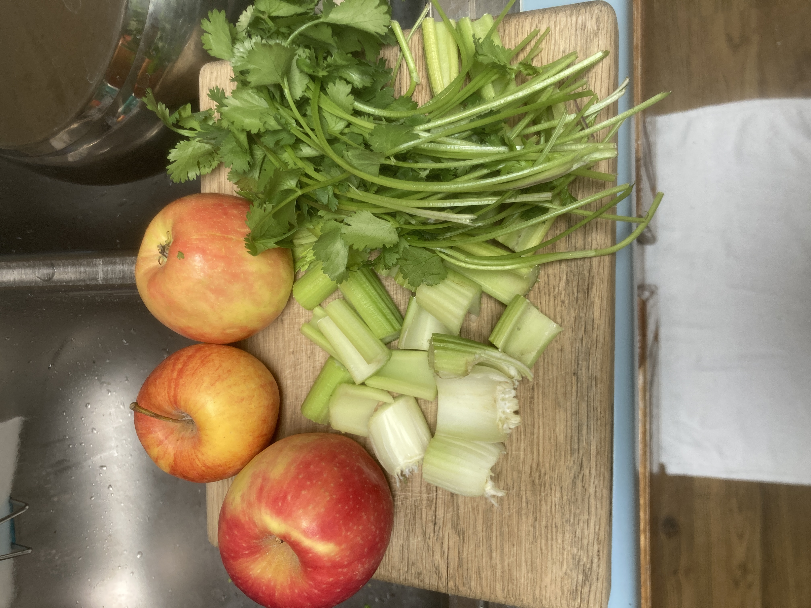
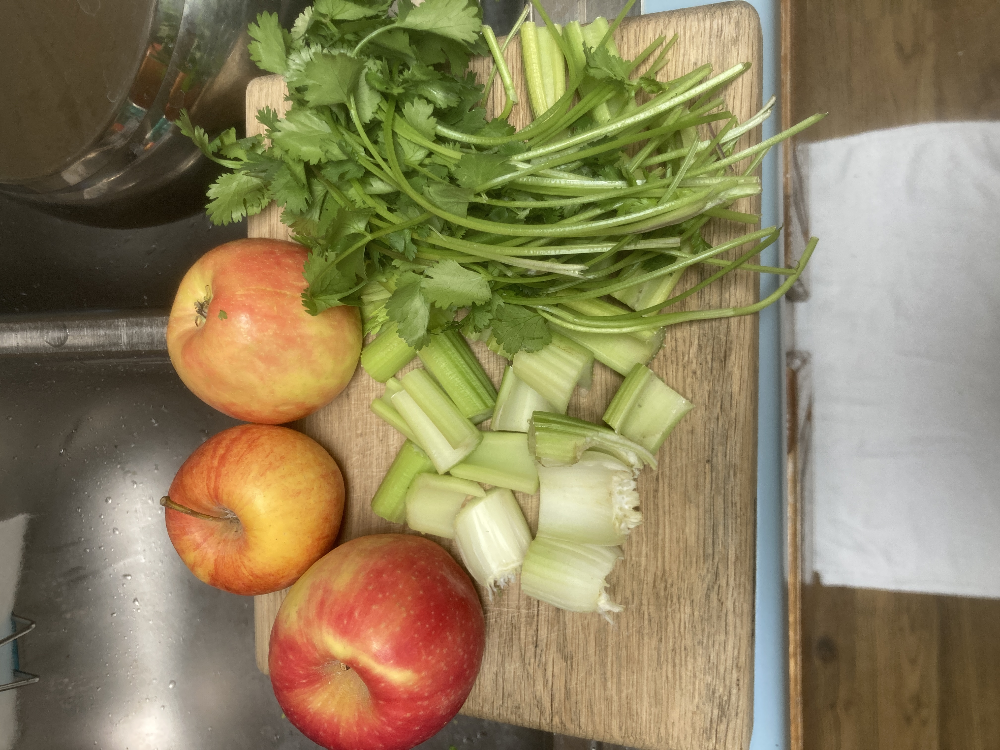
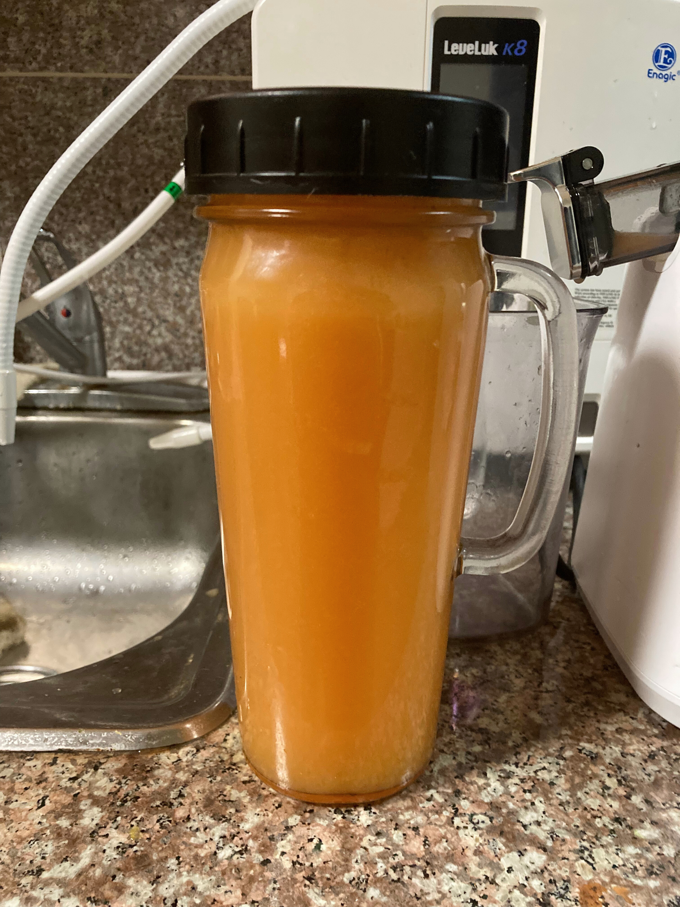
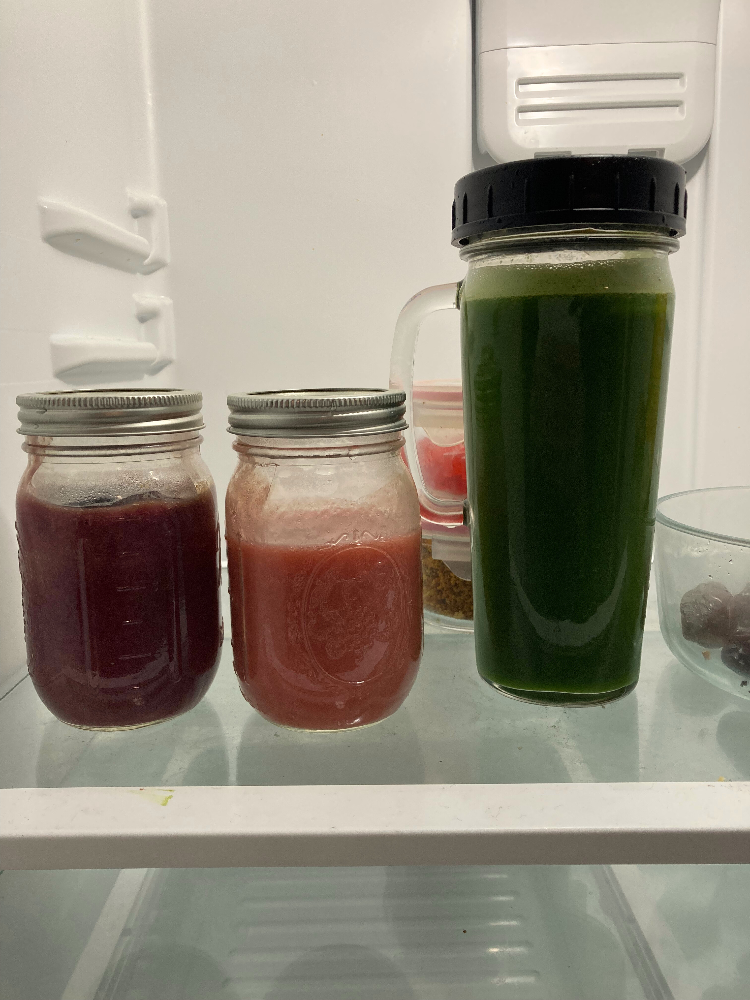
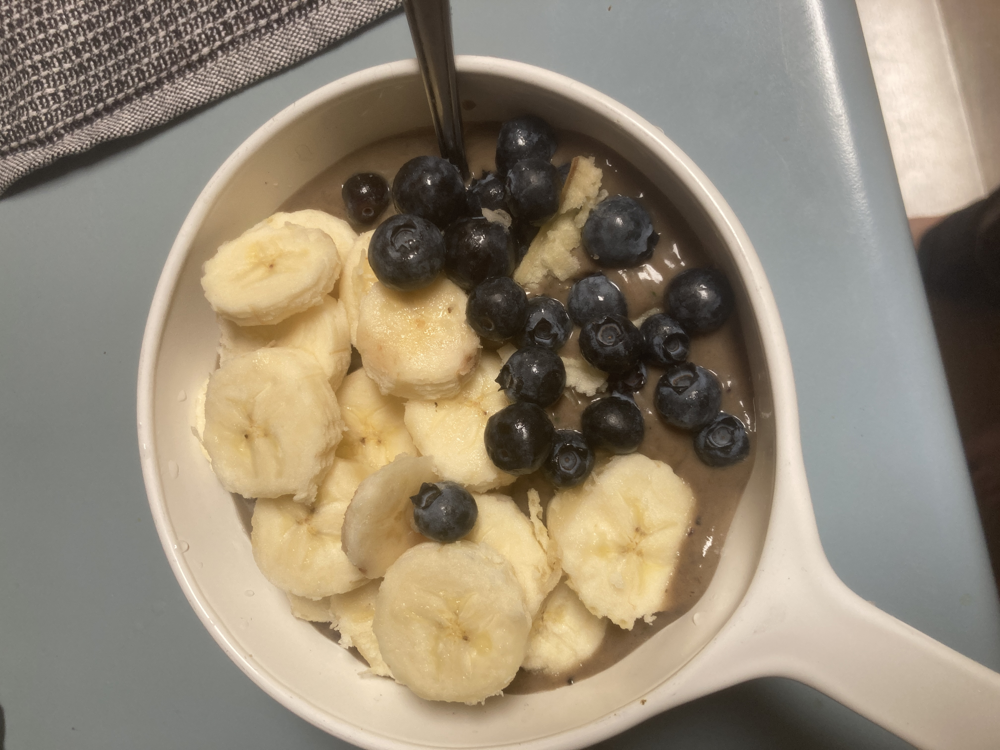
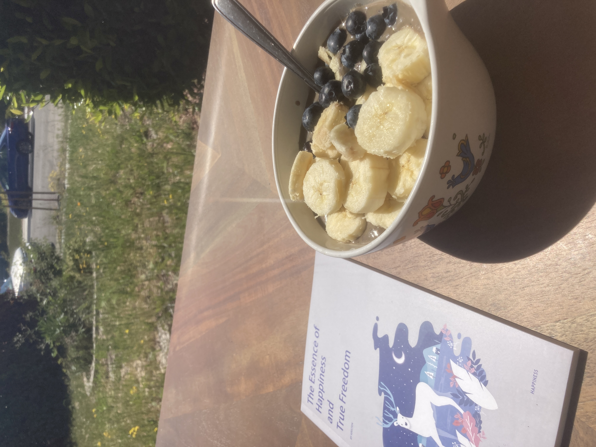

Humans are frugivore species so fruits are our natural source of energy.
Natural raw juice that is not pasteurized and not fortified with chemical substances is nourishing for our body.
Juice is a simple way for us to absorb nutrients and also cleanse the inside of the body of waste build-up.
By consuming real juice as part of my daily lifestyle, I heal and maintain a youthful body free from chronic illnesses.
Most of the juices sold in groceries are either pasteurized or filled with synthetics, so they damage the body.
I decided to purchase a juicer and make yummy drinks myself.
I often make celery juice with apples and cilantro added into the mix.
Celery is a powerful detoxing herb that cleans deeply inside the body.
If anyone wants to heal any ailments, celery in juice form is the go-to long term solution.
 

Who doesn't like orange juice? Real natural raw freshly squeezed orange juice!
I also juice blueberries and strawberries separately, beside my green juice.
Aside from juicing, I also make smoothie fruit bowl.
Typically, shops use acai as a base. Here I am using freshly blended blueberry banana base.
Then I added whole fruit bananas and blueberries as toppings.
I may mix things up and add dates in the blended base, or seeds as toppings with honey on top.
 